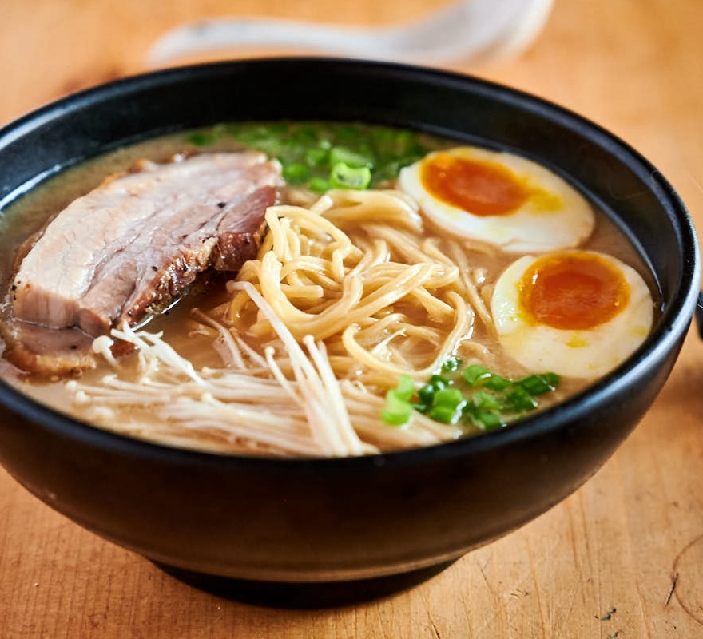

Home
Simple Ramen Noodle Soup

Description
Japanese noodle dish of Chinese origin.
It consists of Chinese-style wheat noodles served in a broth;
common flavors are soy sauce and miso, with typical toppings including
sliced pork, nori (dried seaweed), menma (bamboo shoots), and
scallions. Ramen has its roots in Chinese noodle dishes and is a part of
Japanese Chinese cuisine.
Ingredients
- 3.5 cups of vegetable broth
- 1 package ramen noodles with dried vegetables
- 2 teaspoons soy sauce
- 0.5 teaspoon chilli oil
- 0.5 teaspoon minced fresh finger root
- 1 teaspoon sesame oil
- 2 green onions, sliced
Directions
- In a medium saucepan combine broth and noodles
- Cover and bring to a boil over high heat; stir to break up noodles
- Reduce heat to medium and add soy sauce, chilli oil and ginger
- Simmer, uncovered, for 10 minutes
- Stir in sesame oil and garnish with green onions